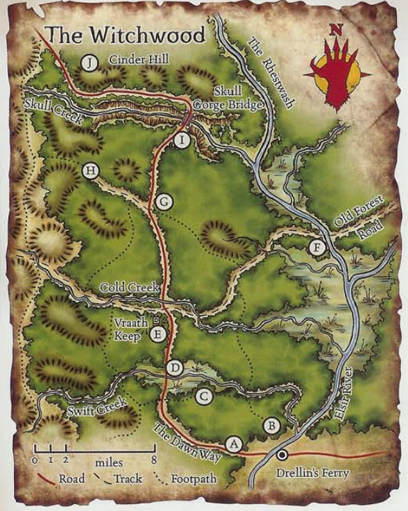

Maps
As your party purchases maps, they will be made available for viewing here.
The Border Kingdoms
A general map of the Border Kingdoms, purchased from a catographer in Farlangn's Respite. The circled area is where most of the Elsir Vale is located.

Elsire Vale (East)
A map gifted to the party by Baron Selvig, who greatly wishes to see the hobgoblin menace dealt with. Shows the way to Drellin's Ferry, and a few small surrounding settlements.

Witchwood
Given to the party by Captain Sorana of Drellin's Ferry. This map shows various routes through these woods, as well as points of interest.
